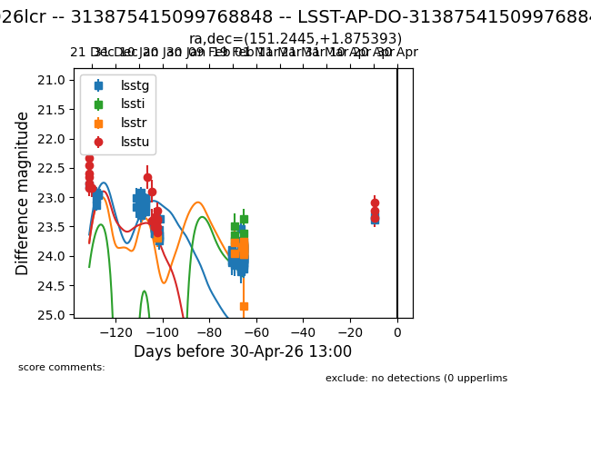
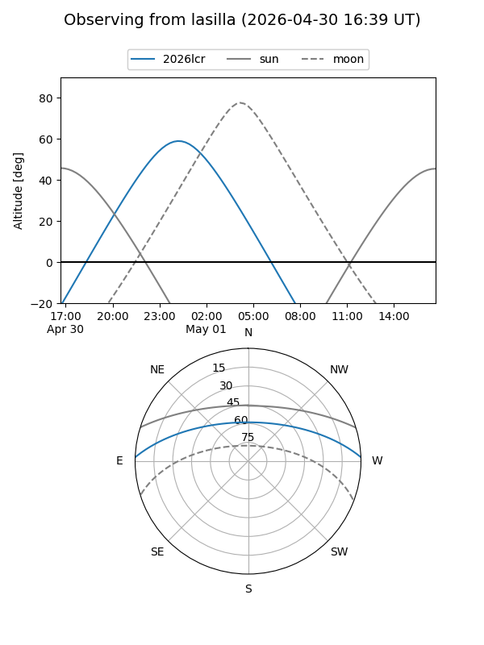
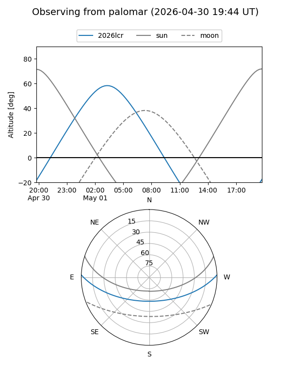
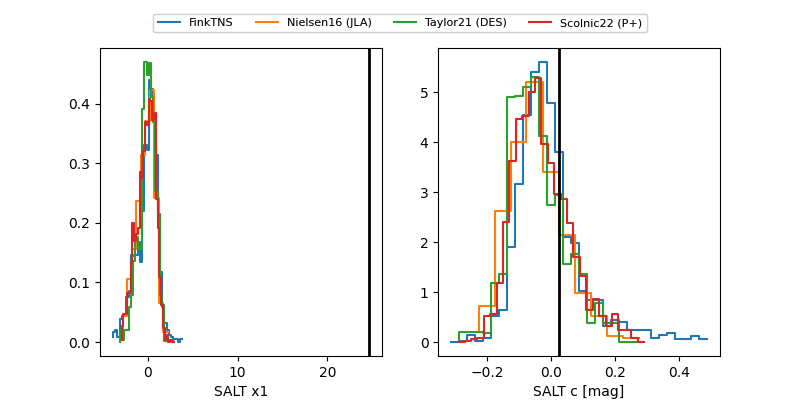

2026lcr
Target 2026lcr at 2026-04-30 13:06
Aliases and brokers:
TNS: link
YSE: link
alt names
LSST-AP-DO-313875415099768848 (lsst)
313875415099768848 (fink_lsst)
2026lcr (tns,yse)
Coordinates:
equatorial (ra, dec) = 151.2445,+1.87539
equatorial (HMS+DMS) = 10:04:58.68,+01:52:31.42
galactic (l, b) = (238.0790,+42.83920)
Flags:
Photometry:
last lsstg=23.32, lssti=23.38, lsstr=23.98, lsstu=23.09
82 lsstg, 5 lssti, 14 lsstr, 20 lsstu detections
Lightcurve

Visibility


Additional plots
